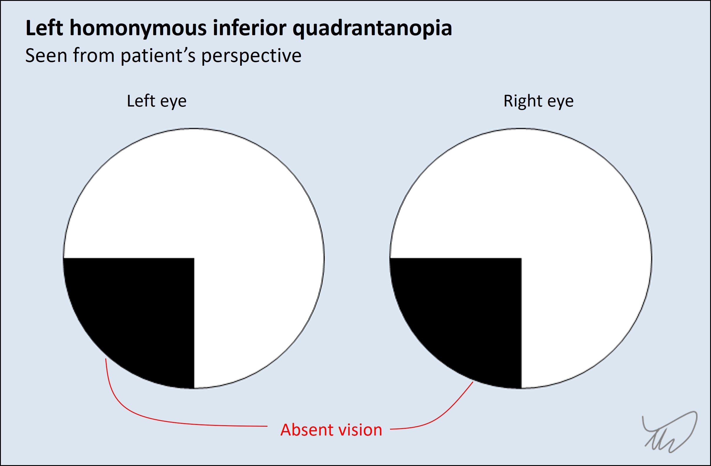

Case 8. Bumping into things
Case
A 64 year old woman presented with a 10 day history of bumping into things on her left side.
She tended to bump into things which were lower down. She had tripped on tree branches on the ground, had bumped into a bike chained to a railing, and once missed a turnoff on the road, not realising until after she had passed it.
She initially attributed this to absent-mindedness during a busy period in her life - then recognised there was a deeper problem.
There were no other symptoms reported, including no headache or systemic symptoms
Past medical history included breast cancer, curatively treated 9 years previously with surgery and chemo-radiotherapy; surveillance had been stable in the interval. She had no other medical problems and no history of visual issues.
On examination she had a left inferior homonymous quadrantanopia. The rest of the examination was normal.

Where is the lesion?